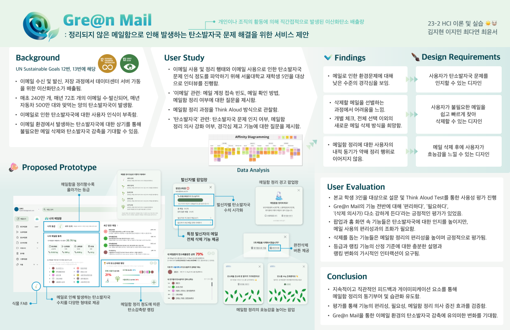

EcoMail: A Mailbox Design Proposal for Forming Sustainable Email Organization Habits
EcoMail addresses the environmental impact of digital clutter caused by unorganized email habits. By understanding university students' email usage patterns and their perception of environmental issues, this project introduces a mailbox interface designed to foster sustainable email organization habits.
The Problem
With millions of emails sent every second, the carbon footprint associated with email servers and storage is significant. University students, in particular, are overwhelmed by frequent mass emails and struggle with email management, often leaving their inboxes cluttered. Despite being aware of the environmental impact, this awareness rarely translates into sustainable practices due to a lack of tangible motivation and tools.
Research Methodology
The research focused on in-depth interviews with university students to explore their email usage habits, challenges in inbox management, and perspectives on the environmental impact of digital clutter. The collected data was analyzed using Affinity Diagramming and Thematic Analysis to uncover key patterns and themes.
Research Insights
- Email Overload: Students reported receiving a high volume of unnecessary emails, often neglecting to organize or delete them.
- Limited Perception of Impact: While many understood the connection between email storage and carbon emissions, the intangible nature of digital carbon footprints hindered sustained action.
- Barriers to Action: Overwhelmed by the volume of emails, students felt demotivated to engage in email decluttering, despite recognizing its importance.
The Solution: EcoMail
EcoMail integrates eco-feedback and gamification to transform email management into an engaging and environmentally impactful activity. The design includes:
- Eco-Feedback Notifications: Visualizing the environmental impact of email management by equating deleted emails to tangible benefits like "trees saved."
- Gamification Features: Introducing rankings, missions, and badges to motivate users to regularly clean their inboxes.
- Personalized Alerts: Highlighting the clutter in a user's inbox with actionable steps and periodic reminders.
Impact and Future Directions
Preliminary user testing demonstrated EcoMail’s potential to significantly enhance students' willingness to declutter their inboxes and heighten their awareness of digital carbon footprints. Future iterations aim to refine these features and explore scalability to broader audiences, including corporate email users.